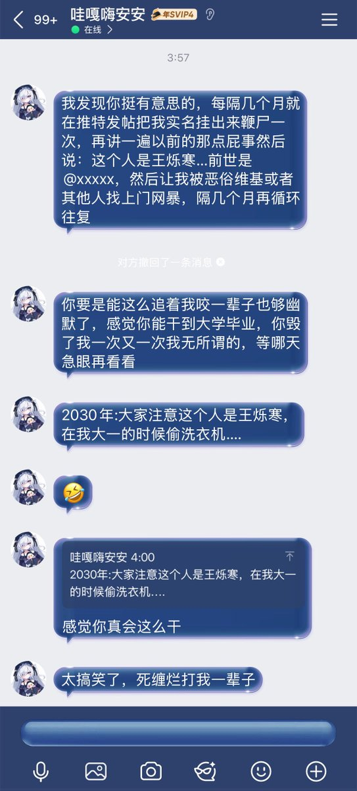

🍀🍥竹蜻蜓🍥🍀
@zqtlovekris99
@YongQuan @HuamanX09 那说了这么多他还钱了吗

铨Quan🍥
@YongQuan
我知道你生日其实就是想堵心我 没关系的
我也一直没有说网暴你 也没有引导之类的
很简单 我只是想单纯说出来记录 避免我忘了 毕竟我不是只能当的meme账号 我也是需要有记录的
至于王先生 债务问题那咱们只能法院见了@HuamanX09
我认为合同里面的东西 以及契约精神很重要
请自重 https://t.co/qzOsJmK8jU https://t.co/Aq129YkXCy